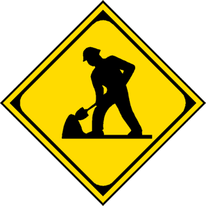

Caravana Médica
- Coahuixtla 5 Abril 2014 10:00 a.m.
"He aquí que yo les traeré sanidad y medicina; y los curaré, y les revelaré abundancia de paz y de verdad". Jeremías 33:6
Campamentos
- De 8-15 años, 14-16 Abril 2014
- De jóvenes 3-4 Mayo 2014

Jornadas de Trabajo (Campamento ELIM)
- 12 - 14 Junio 2014
- 18 - 20 Septiembre 2014
- 27 - 29 Noviembre 2014
Y todo lo que hagáis, hacedlo de corazón, como para el Señor y no para los hombres; Colosenses 3:17
Misiones
- Semana de Oración por Misiones Nacionales 2-6 Junio 2014
- Semana de Oración por Misiones Mundiales Diciembre 2014
Jóvenes ELIM
- Ayuda Social 5 Julio 2014
- Noche Mexicana 13 Septiembre 2014
CONAJEBA
- Julio 28 - 1 Agosto
- Ensenada, Baja California
- conajebaunbj.wix.com